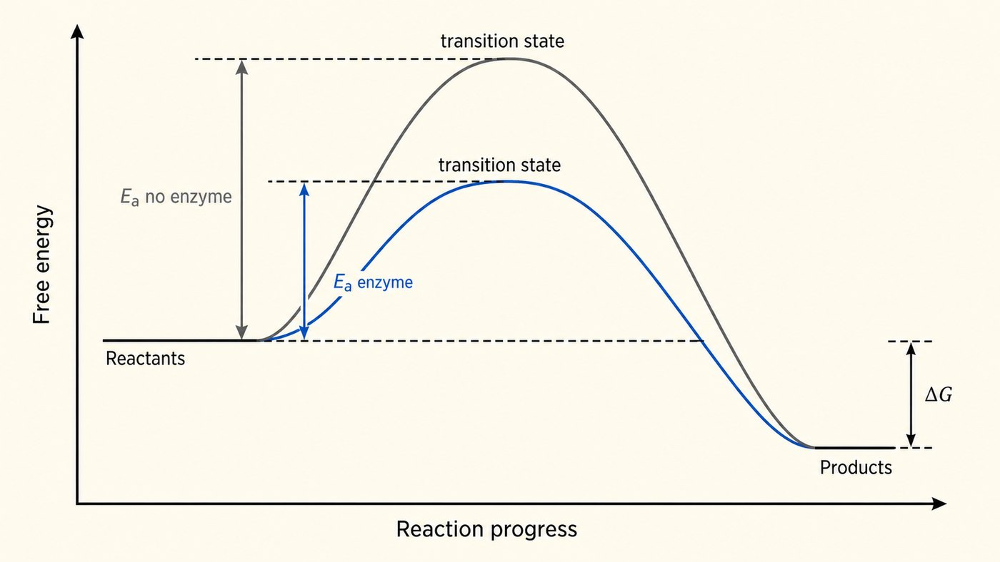
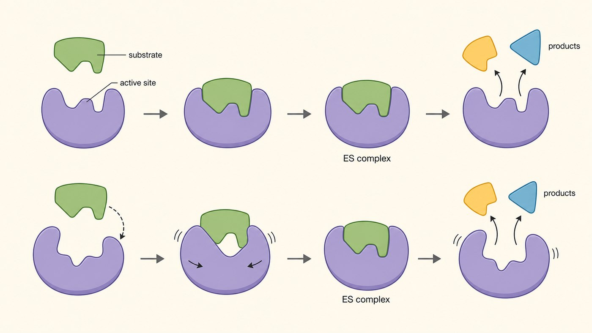

第 6 週
酵素(一)
催化原理
Enzyme (1): nguyên lý xúc tác
Nối tiếp tuần trước
「抓」氧氣。
被抓的叫配位基。
Bắt oxygen — gọi là phối tử
「抓」要處理的東西。
被抓的叫受質。
Bắt cơ chất
Một cái bẫy tiếng Trung
用「酵素」。
今天學的就是這個。
Nói riêng → 酵素
用「酶」。
己糖激酶、丙酮酸激酶…
Trong tên → 酶
看到「◯◯酶」= 那是一個酵素。第 13 週你會看到很多。
Từ vựng · 不用背,看過就好
| 中文 | Tiếng Việt | English | 中文 | Tiếng Việt | English |
|---|---|---|---|---|---|
| 酵素 | Enzyme | Enzyme | 專一性 | Tính đặc hiệu | Specificity |
| 受質 | Cơ chất | Substrate | 誘導契合 | Khớp cảm ứng | Induced fit |
| 產物 | Sản phẩm | Product | 輔因子 | Cofactor | Cofactor |
| 活性部位 | Trung tâm hoạt động | Active site | 輔酶 | Coenzyme | Coenzyme |
| 活化能 | Năng lượng hoạt hóa | Activation energy | 維生素 | Vitamin | Vitamin |
| 過渡態 | Trạng thái chuyển tiếp | Transition state | 酶原 | Tiền enzyme | Zymogen |
新課綱 enzyme,醫科 enzym,舊 SGK enzim —— 三個都是同一個。
Enzyme làm gì?
那個反應本來就會發生,只是太慢 —— 慢到你等一輩子也等不到。
Năng lượng hoạt hóa: một ngọn núi

想像反應要翻過一座山。
Tưởng tượng phản ứng phải trèo qua một ngọn núi.
3 điều về ngọn núi
= 活化能。
越高,反應越慢。
Núi cao = phản ứng chậm
= 過渡態。
最不穩定的那一刻。
Đỉnh núi = trạng thái chuyển tiếp
挖一條隧道。
山變矮 → 反應變快。
Enzyme đào hầm
Câu quan trọng nhất hôm nay
「多快」。
Enzyme đổi: NHANH bao nhiêu
「會不會發生」。
KHÔNG đổi: có xảy ra hay không
Trung tâm hoạt động
| 活性部位 | 酵素上一個小凹槽。受質就抓在這裡。 |
|---|---|
| 很小 | 整個酵素有幾百個胺基酸,活性部位只用到幾個。 |
| 專一性 | 一個酵素通常只認一種受質。像鑰匙只開一個鎖。 |
為什麼只認一種?形狀、電荷、氫鍵都要對得上。
那是第 3、4 週的側鏈在工作。
Khớp cảm ứng

鎖與鑰匙:酵素是硬的,不會變。舊的想法。 | 誘導契合:酵素會變形,包住受質。
Điểm chính khi nhìn hình
Trợ thủ của enzyme
| 名稱 | 例子 | 是什麼 |
|---|---|---|
| 輔因子 Cofactor | 總稱 | 所有幫手都叫這個 |
| 金屬離子 | Zn²⁺、Mg²⁺、Fe²⁺ | 無機的 |
| 輔酶 Coenzyme | NADH、CoA | 有機的,會跑來跑去 |
| 輔基 Nhóm ngoại | 血基質 | 有機的,黏很緊不會走 |
血基質 = 上週的那個。它是血紅素的輔基。
Vì sao phải ăn vitamin?
維生素 B₃ → NAD⁺(第 13 週糖解一直用)。維生素 B₁ → 丙酮酸去氫酶(第 14 週)。
Vitamin B₃ → NAD⁺, vitamin B₁ → pyruvate dehydrogenase
身體自己做不出維生素,只能吃。 Cơ thể không tự tạo được → phải ăn.
Tiền enzyme
有些酵素太危險,一做出來就啟動會把自己的細胞吃掉。
先做成「還沒啟動」的版本,送到該去的地方,再切一刀啟動。
Bài tập: Nhìn hình
在活化能圖上指出 Chỉ ra trên hình:
Bài tập: Đúng hay sai
酵素會改變反應的 ΔG。
酵素讓不可能發生的反應變得可能。
活性部位通常只佔酵素的一小部分。
維生素是很多輔酶的原料。
想一想:酵素把反應加快一百萬倍。反過來的反應有沒有變快?
下週 · Tuần sau
酵素(二):動力學與抑制
Enzyme (2): động học và chất ức chế
▶
課前:看詞彙表第 7 週(14 個詞)
Xem trước 14 từ của tuần 7
▶
小測:下週前 10 分鐘,考今天的詞
Kiểm tra 5 câu, 10 phút đầu giờ
▶
提示:下週用曲線量「有多快」、「抓多緊」。很多藥物就是酵素抑制劑
Gợi ý: nhiều thuốc là chất ức chế enzyme